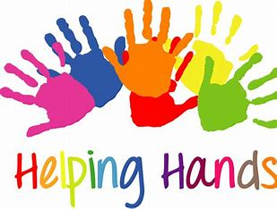
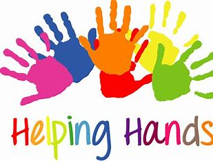

Helping with your Hands is a powerful way to make the world around you .When you use your hands to assist others.
You engage in acts of service that can be deeply rewarding and impactful.Whether it's volunteering to build homes for those in need ,prepairng meals for the hungry ,or simply lending a hand to neighbour with chores .
The physical act of helping fosters a sense of connection and community.Manual tasks often involve working side by side with others ,creating bonds and shared memories.
It teaches the importance of contributing to the greater good and shows how small,hands on efforts can collectively bring about significant change...
 

The Akshaya Patra Foundation is an independent charitable trust registered under the Indian Trusts Act 1882 (Reg. No. 154). We endeavour to implement the Government of India’s PM POSHAN Initiative (formerly the Mid-Day Meal Scheme) to solve at scale the overarching societal issues of classroom hunger and malnutrition in the country.
It is our firm belief that investing in child nutrition and education is one of the most effective entry points for human development. Driven by this belief, we strive to provide children with a hot, nutritious and tasty mid-day meal every school day as an incentive to come to school. Thus, the vision – ‘No child in India shall be deprived of education because of hunger.’
Since the year 2000, we have endeavoured to reach out to children with wholesome mid-day meals every school day by leveraging technology and effectively harnessing the potential of the Public-Private Partnership (PPP) model. By establishing an extensive network of kitchens and partnering with the Government of India, state governments, UT administrations, corporate houses and philanthropists, we have created a system to address a social cause on a massive scale.
Our efforts are in direct alignment with two critical Sustainable Development Goals (SDGs): SDG 2 – Zero Hunger and SDG 4 – Quality Education.
Currently, we serve over 2.2 million children studying in 23,110 government schools and Anganwadi centres across 75 locations in 16 states and 2 union territories of India.
4 Billion Meals
2.2 Million Children
23,111 Schools
16 States and 2 Union Territories
75 Locations
The Best Way to Make a Difference in the Lives of Others
DONATE NOW
logo
The Akshaya Patra Foundation is a non profit organisation that strives to eliminate classroom hunger by implementing the Mid Day Meal Programme